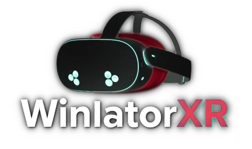
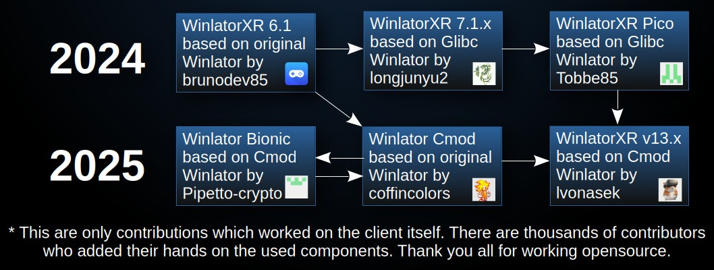

|  |
WinlatorXR is a next-generation Windows compatibility environment built specifically for Extended Reality (XR). It enables users to run full Windows applications and games inside immersive VR and AR spaces—bringing the power of desktop software into a spatial, interactive world. Designed for performance and flexibility, WinlatorXR bridges the gap between traditional Windows programs and modern XR headsets. Whether you're launching productivity tools, creative software, or classic PC games, WinlatorXR transforms them into immersive experiences optimized for virtual environments.
|
Although the Quest 3 and Quest 3 S remain the most popular headsets for running WinlatorXR, our compatibility extends well beyond Meta’s ecosystem. The Pico 4 Ultra, for example, is a strong alternative. Thanks to its Turnip driver support, it can deliver slightly better performance than the Quest 3 in many scenarios. The base Pico 4 model, however, lacks a crucial Vulkan extension; as a result, it can run only DirectX 7 and DirectX 8 titles, and we currently consider it effectively unsupported. Surprisingly, the older Meta Quest 2 continues to perform admirably. With the Turnip driver enabled, it offers full compatibility and often works far better than expected for a device of its generation.
We’ve also benefited from community contributions. A developer from Play for Dream kindly added support for the Play for Dream MR headset. While this support remains in the project, we cannot guarantee long-term reliability, as we do not have access to the hardware for continuous testing.
Special thanks to Amanda Watson for writing a tutorial on developing hybrid (2D/VR) applications. That knowledge was unavailable elsewhere, and this project would not have been possible without her contribution.
